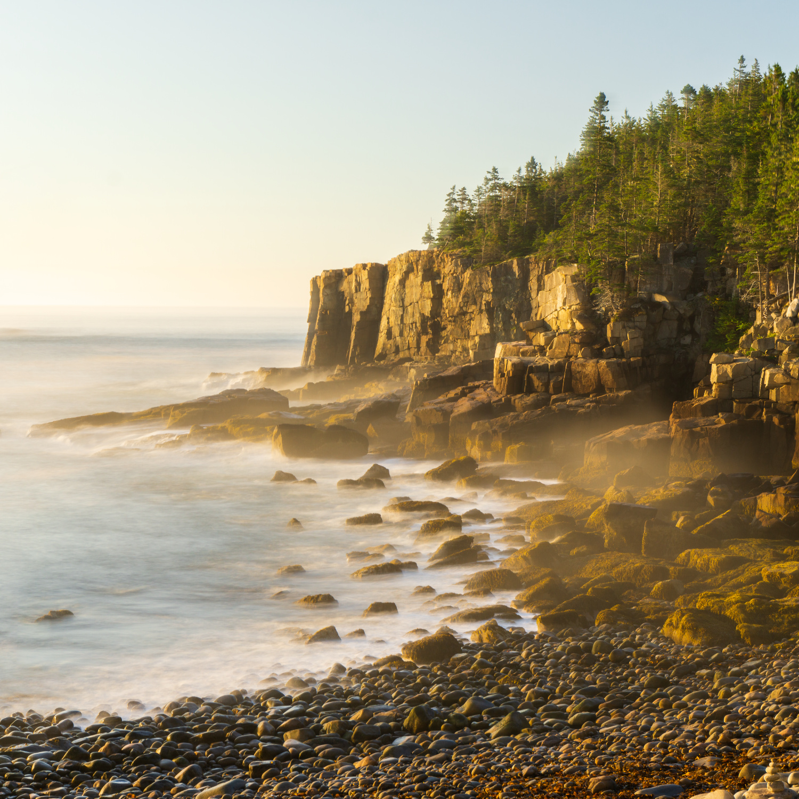
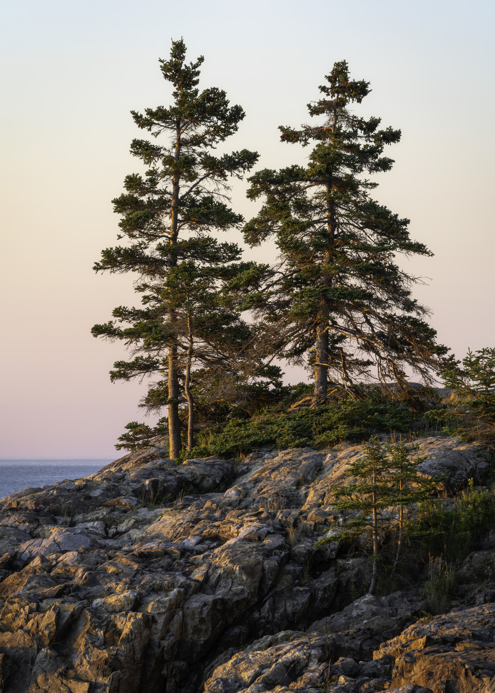
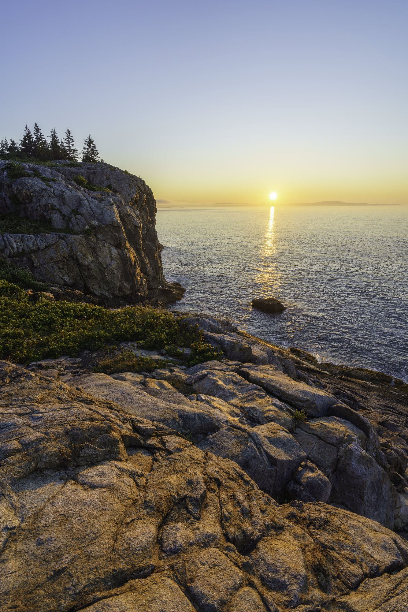
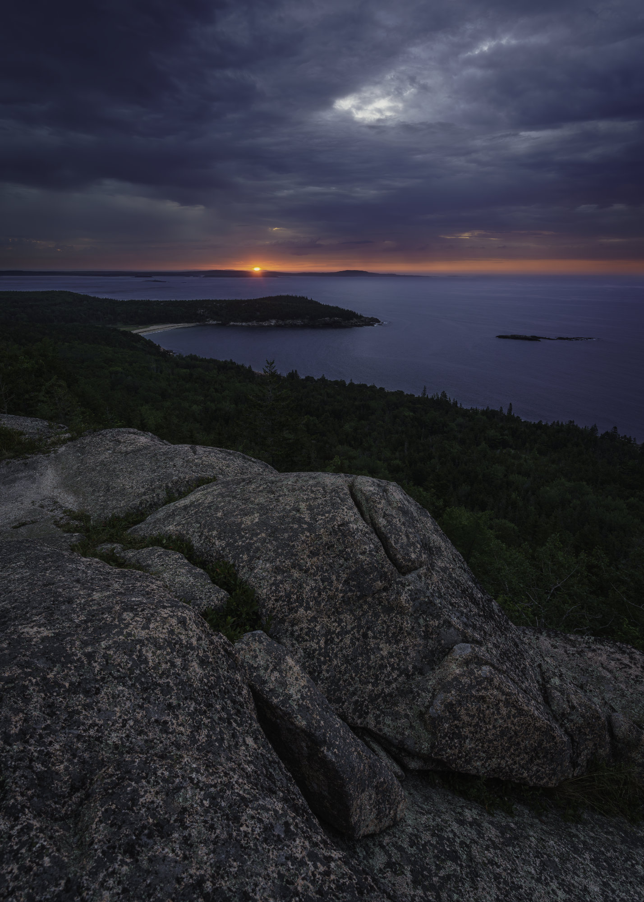
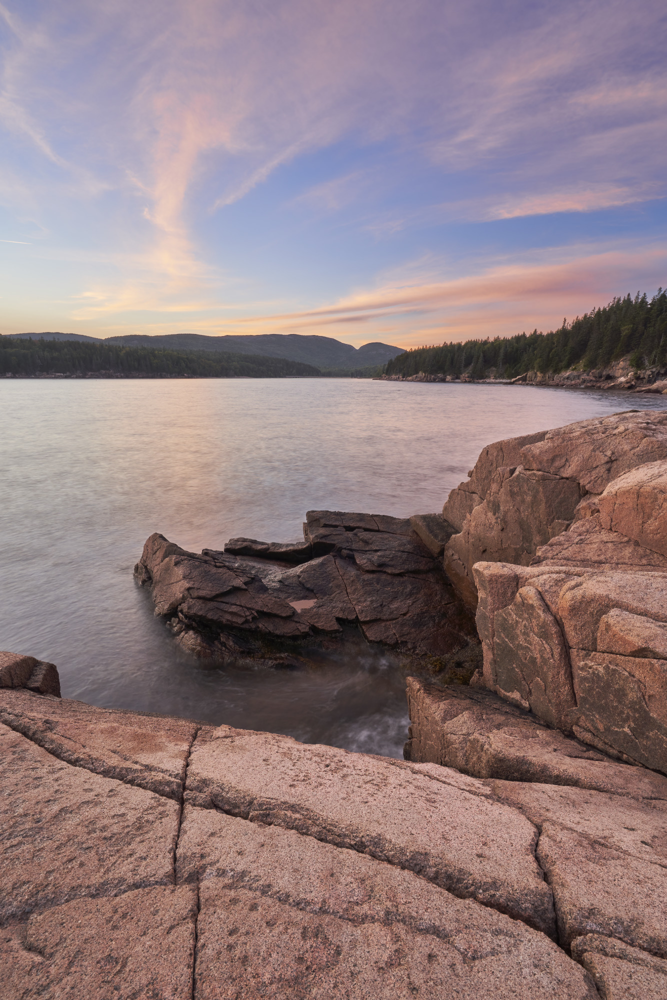
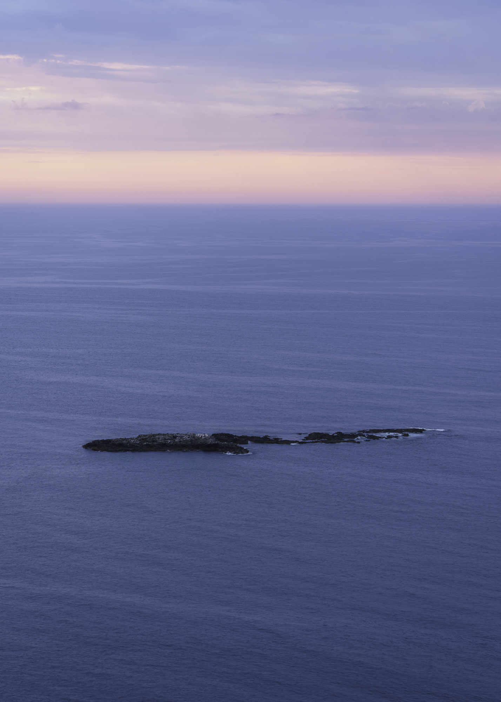
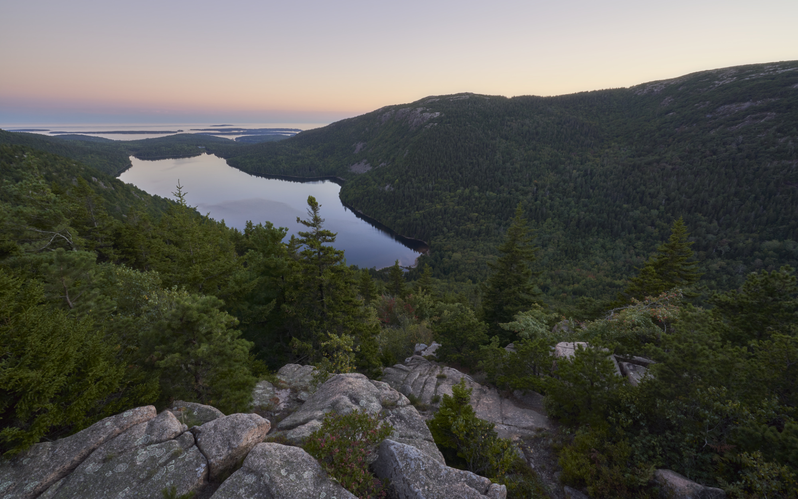
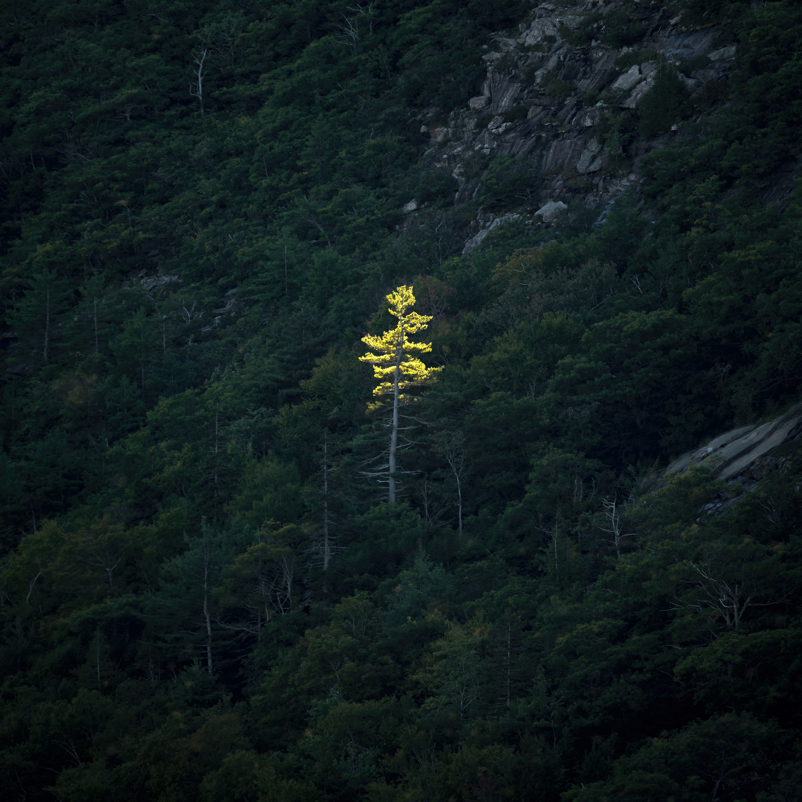
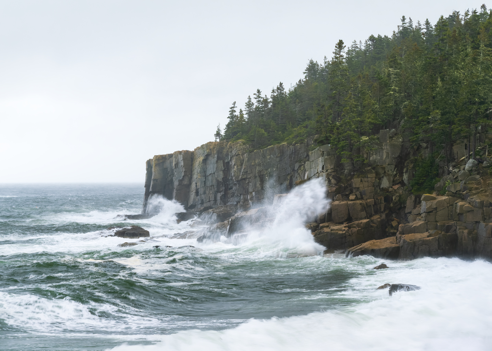
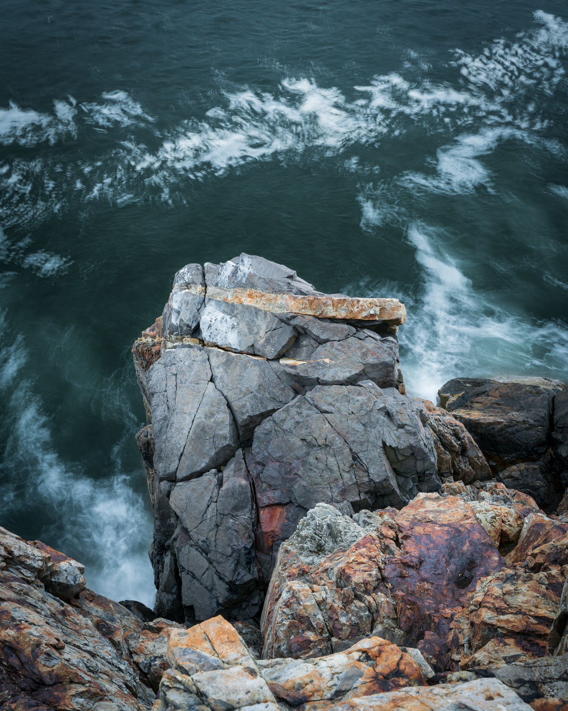

Sony α6000 / E 16-70mm F4 ZA OSS / 55mm / 13s / f/11 / ISO 100
Sony α6000 / E 16-70mm F4 ZA OSS / 91mm / 8s / f/8 / ISO 100
Sony α7R III / FE 70-300mm F4.5-5.6 G OSS / 203mm / 1/8s / f/13 / ISO 100
Sony α7R III / FE 16-35mm F4 ZA OSS / 16mm / 1/50s / f/11 / ISO 100

Sony α7R III / FE 70-300mm F4.5-5.6 G OSS / 87mm / 1/5s / f/11 / ISO 100
Sony α7R III / FE 16-35mm F4 ZA OSS / 16mm / 3s / f/11 / ISO 100
Sony α7R III / Sony Vario-Tessar T* FE 16-35 mm F4 ZA OSS (SEL1635Z) / 16mm / 5s / f/14 / ISO 100
Sony α7R III / Tamron 28-75mm F2.8 Di III RXD / 48mm / 1s / f/13 / ISO 50

Sony α7R III / Tamron 28-75mm F2.8 Di III RXD / 61mm / 1/5s / f/11 / ISO 100
Sony α7R III / Sony Vario-Tessar T* FE 16-35 mm F4 ZA OSS (SEL1635Z) / 16mm / 1/4s / f/13 / ISO 100
Sony α7R III / 100-400mm F5-6.3 DG DN OS | Contemporary 020 / 400mm / 1/60s / f/11 / ISO 100

Sony α7R III / E 28-75mm F2.8-2.8 / 75mm / 1/5s / f/11 / ISO 100
Sony α7R III / E 28-75mm F2.8-2.8 / 75mm / 1/13s / f/11 / ISO 800

Sony α7R III / E 28-75mm F2.8-2.8 / 52mm / 1/5s / f/13 / ISO 100
Sony α7R III / E 28-75mm F2.8-2.8 / 49mm / 5s / f/11 / ISO 50